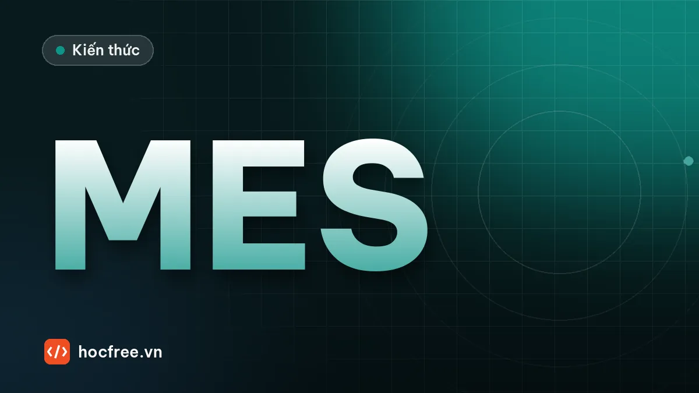

MES và truy xuất nguồn gốc: gửi dữ liệu vision không mất bản ghi
Dữ liệu kiểm tra MES cần, bản ghi JSON, các cách tích hợp và hàng đợi SQLite gửi lại có backoff, khóa idempotency khi mạng gián đoạn.

Học xong bài này, bạn sẽ
- Biết dữ liệu kiểm tra cần gửi lên MES
- Chọn cách tích hợp
- Không mất dữ liệu khi mạng gián đoạn
Nên học trước: Vision dẫn hướng robot gắp vật
Nội dung bài viết
Kết quả của trạm vision không chỉ dùng để đẩy sản phẩm lỗi ra khỏi băng tải. Sáu tháng sau, khi một khách hàng gửi lại một sản phẩm hỏng và hỏi "chiếc này được kiểm tra thế nào?", nhà máy phải trả lời được trong vài phút: kiểm tra lúc nào, ở trạm nào, với công thức phiên bản nào, đo được bao nhiêu, ảnh đâu, và những sản phẩm nào khác cùng lô có nguy cơ. Dữ liệu đó sống trong MES. Bài trước, "Vision dẫn hướng robot gắp vật", đã nói chuyện với robot ở tầng thiết bị; bài này đi lên tầng quản lý sản xuất: MES cần dữ liệu gì từ trạm vision, chọn cách tích hợp nào, và quan trọng nhất là thiết kế sao cho không mất bản ghi nào khi mạng hay MES gián đoạn. Bài sau, "Lưu kết quả và ảnh NG: SQLite, thư mục, dọn ổ đĩa", là phần lưu trữ cục bộ đi cùng với những gì bạn học ở đây.
1. MES ở đâu và truy xuất nguồn gốc là gì
MES (Manufacturing Execution System, hệ thống điều hành sản xuất) là tầng phần mềm nằm giữa ERP (kế hoạch, đơn hàng, kho, tài chính) ở trên và tự động hóa (PLC, robot, máy, trạm vision) ở dưới. MES theo dõi lệnh sản xuất (work order), sản phẩm nào đi qua công đoạn nào, khi nào, kết quả gì, dùng lô nguyên liệu nào, ai vận hành. Theo mô hình phân tầng ISA-95 hay được nhắc trong nhà máy: tầng 0–2 là thiết bị và điều khiển, tầng 3 là MES, tầng 4 là ERP.
Truy xuất nguồn gốc (traceability) có hai chiều:
- Truy ngược (backward): từ một số seri, tìm lại toàn bộ lịch sử: công đoạn, máy, thông số, kết quả kiểm tra, lô nguyên liệu.
- Truy xuôi (forward): từ một sự cố (một lô nguyên liệu lỗi, một ca camera bị lệch chuẩn), tìm tất cả sản phẩm bị ảnh hưởng để khoanh vùng thu hồi. Khoanh được 300 sản phẩm thay vì cả 3 ngày sản xuất là khác biệt hàng trăm triệu đồng.
Ngoài việc nhận kết quả, nhiều MES còn làm khóa liên động công đoạn (interlock, route check): trước khi trạm xử lý, nó hỏi MES "sản phẩm SN… có được phép làm ở công đoạn này không?" (đã qua đủ công đoạn trước chưa, có bị giữ lại không). Khi đó trạm vision vừa là người gửi dữ liệu, vừa là người phải hỏi, và phải có quy tắc rõ ràng khi MES không trả lời.
2. MES cần dữ liệu gì từ trạm vision
| Nhóm | Trường | Vì sao cần |
|---|---|---|
| Định danh sản phẩm | Số seri (thường đọc từ mã DataMatrix trên sản phẩm), mã hàng, lệnh sản xuất | Khóa để truy xuất; không có seri thì chỉ truy được theo lô/thời gian |
| Định danh sự kiện | event_id duy nhất cho mỗi lần kiểm tra, số chu kỳ | Chống ghi trùng khi gửi lại; phân biệt lần kiểm tra lại (re-test) với bản gửi lại |
| Nơi chốn | Dây chuyền, trạm, (camera nếu trạm có nhiều camera) | Thống kê lỗi theo trạm, truy xuôi khi một trạm có vấn đề |
| Thời gian | Thời điểm trigger và thời điểm có kết quả, có múi giờ | Ghép với dữ liệu các công đoạn khác, tính thời gian chu kỳ |
| Kết quả | OK / NG / ERROR, mã lỗi | ERROR (không kiểm tra được) phải tách khỏi NG: một sản phẩm "chưa được kiểm tra" không được coi là đạt |
| Giá trị đo | Tên, giá trị, đơn vị, giới hạn dưới/trên (LSL/USL) | Thống kê SPC (Cpk, xu hướng): phát hiện máy trôi dần trước khi ra NG. Gửi kèm giới hạn để dữ liệu tự giải thích được, kể cả khi công thức đổi |
| Phiên bản | Công thức (recipe) và phiên bản, phiên bản phần mềm, phiên bản mô hình AI | Khi tiêu chí thay đổi, biết sản phẩm nào được kiểm tra theo tiêu chí cũ |
| Tham chiếu ảnh | Đường dẫn/URI ảnh (thường chỉ ảnh NG và một tỉ lệ mẫu ảnh OK), thời gian lưu | Bằng chứng khi có khiếu nại; ảnh nằm ở kho ảnh, MES chỉ giữ đường dẫn |
3. Thiết kế bản ghi JSON cho một lần kiểm tra
Bài thực hành của bài học: thiết kế bản ghi gồm mã sản phẩm, thời gian, kết quả, giá trị đo, đường dẫn ảnh. Ba quyết định thiết kế đáng chú ý trong code dưới:
event_idtất định: tạo bằnguuid5từ trạm, seri, số chu kỳ và thời điểm trigger. Cùng một lần kiểm tra luôn cho cùngevent_id, kể cả khi phần mềm khởi động lại và tạo lại bản ghi. (Dùnguuid4ngẫu nhiên cũng được, miễn là nó được tạo một lần lúc kiểm tra và lưu lại, không tạo mới mỗi lần gửi.)- Thời gian ISO 8601 có múi giờ, đến mili giây:
2026-10-10T09:15:32.418+07:00. Không bao giờ gửi giờ "trần" không múi giờ. - Kiểm tra trước khi gửi: thiếu trường bắt buộc, kết quả lạ, số đo NaN đều bị chặn ngay tại trạm, nơi còn biết ngữ cảnh để sửa.
import json
import math
import uuid
from datetime import datetime, timezone, timedelta
GIO_VN = timezone(timedelta(hours=7))
NS_TRAM = uuid.UUID("6f1c2a52-8a51-4c1e-9a43-2b7d3c0e9f10") # hằng số riêng của nhà máy/dự án
def tao_ban_ghi(serial, cycle_no, t_trigger, t_ket_qua, so_do, anh=None):
"""Bản ghi một lần kiểm tra. so_do: list (tên, giá trị, đơn vị, LSL, USL)."""
do = [{"name": ten, "value": round(gt, 4), "unit": dv, "lsl": lsl, "usl": usl, "ok": lsl <= gt <= usl}
for ten, gt, dv, lsl, usl in so_do]
loi = [f"{m['name'].upper()}_{'LOW' if m['value'] < m['lsl'] else 'HIGH'}" for m in do if not m["ok"]]
return {
"schema": "vision-inspection/1.0",
"event_id": str(uuid.uuid5(NS_TRAM, f"VIS-03|{serial}|{cycle_no}|{t_trigger.isoformat()}")),
"serial": serial,
"part_number": "SHAFT-10-A",
"work_order": "WO-2610-0042",
"line": "L2",
"station": "VIS-03",
"cycle_no": cycle_no,
"recipe": {"name": "SHAFT-10-A", "version": "1.4"},
"software_version": "2.3.1",
"time_trigger": t_trigger.isoformat(timespec="milliseconds"),
"time_result": t_ket_qua.isoformat(timespec="milliseconds"),
"result": "OK" if not loi else "NG",
"defect_codes": loi,
"measurements": do,
"image": anh,
}
def kiem_tra(bg):
"""Kiểm tra trước khi đưa vào hàng đợi: thiếu trường, sai giá trị, NaN → báo lỗi ngay tại trạm."""
bat_buoc = ["event_id", "serial", "station", "time_trigger", "result", "measurements"]
thieu = [k for k in bat_buoc if not bg.get(k)]
if thieu:
raise ValueError(f"thiếu trường {thieu}")
if bg["result"] not in ("OK", "NG", "ERROR"):
raise ValueError(f"result lạ: {bg['result']!r}")
for m in bg["measurements"]:
if m["value"] is not None and not math.isfinite(m["value"]): # NaN, inf: không phải JSON hợp lệ
raise ValueError(f"số đo {m['name']} = {m['value']}: không đo được thì gửi result ERROR, value null")
json.dumps(bg, allow_nan=False) # chốt chặn cuối: không cho NaN lọt vào JSON
return True
t0 = datetime(2026, 10, 10, 9, 15, 32, 418000, tzinfo=GIO_VN)
bg = tao_ban_ghi("SN2610A00123", 513, t0, t0 + timedelta(milliseconds=146),
[("diameter", 10.1123, "mm", 9.95, 10.05), ("roundness", 0.012, "mm", 0.0, 0.03)],
anh={"uri": "VIS-03/2026-10-10/SN2610A00123_513_NG.png", "kept_days": 90})
print(json.dumps(bg, ensure_ascii=False, indent=2))
print("Kích thước:", len(json.dumps(bg, separators=(",", ":")).encode()), "byte; kiểm tra:", kiem_tra(bg))
try:
kiem_tra(tao_ban_ghi("SN2610A00124", 514, t0, t0, [("diameter", float("nan"), "mm", 9.95, 10.05)]))
except ValueError as e:
print("Từ chối:", e){
"schema": "vision-inspection/1.0",
"event_id": "04279022-00ac-50c9-b4aa-0929deded24e",
"serial": "SN2610A00123",
"part_number": "SHAFT-10-A",
"work_order": "WO-2610-0042",
"line": "L2",
"station": "VIS-03",
"cycle_no": 513,
"recipe": {
"name": "SHAFT-10-A",
"version": "1.4"
},
"software_version": "2.3.1",
"time_trigger": "2026-10-10T09:15:32.418+07:00",
"time_result": "2026-10-10T09:15:32.564+07:00",
"result": "NG",
"defect_codes": [
"DIAMETER_HIGH"
],
"measurements": [
{
"name": "diameter",
"value": 10.1123,
"unit": "mm",
"lsl": 9.95,
"usl": 10.05,
"ok": false
},
{
"name": "roundness",
"value": 0.012,
"unit": "mm",
"lsl": 0.0,
"usl": 0.03,
"ok": true
}
],
"image": {
"uri": "VIS-03/2026-10-10/SN2610A00123_513_NG.png",
"kept_days": 90
}
}
Kích thước: 675 byte; kiểm tra: True
Từ chối: số đo diameter = nan: không đo được thì gửi result ERROR, value nullBản ghi khoảng 675 byte khi nén khoảng trắng: 1 sản phẩm/giây là khoảng 58 MB mỗi ngày, không đáng kể với MES. Lưu ý các tên trường dùng tiếng Anh không dấu và có trường schema mang phiên bản định dạng: khi thêm trường mới, tăng phiên bản để phía MES biết cách đọc. Số đo NaN (ví dụ không tìm thấy cạnh để đo) bị từ chối, vì NaN không phải JSON hợp lệ và nhiều hệ thống sẽ từ chối cả bản ghi; cách đúng là gửi result: "ERROR" với value: null và mã lỗi.
4. Chọn cách tích hợp
| Cách | Hoạt động | Ưu điểm | Nhược điểm |
|---|---|---|---|
| Qua PLC | Vision gửi kết quả cho PLC (bài Modbus/PROFINET), PLC hoặc SCADA gửi lên MES | Trạm vision đơn giản; một đầu mối cho cả máy | Ít dữ liệu (vài word), khó gửi chuỗi seri dài, đường dẫn ảnh, nhiều số đo |
| REST/JSON qua HTTP | Vision gọi API của MES cho mỗi lần kiểm tra | Phổ biến với MES hiện đại, dễ thử bằng công cụ có sẵn, có mã trạng thái rõ ràng | Phải tự lo gửi lại, chống trùng, xác thực (token, HTTPS) |
| OPC UA | Trạm vision làm OPC UA server (MES đọc/đăng ký), hoặc ghi vào server của MES/SCADA | Chuẩn mở, mô hình dữ liệu có kiểu; có companion specification cho machine vision | Subscription là kênh thông báo, không phải kho: rớt kết nối là có thể mất thay đổi nếu không có cơ chế đệm |
| Ghi vào cơ sở dữ liệu | Vision ghi vào một bảng trung gian (staging) trên SQL Server/Oracle…, MES đọc | Đơn giản, giao dịch rõ ràng | Phụ thuộc chặt vào cấu trúc bảng; tuyệt đối không ghi thẳng vào bảng nội bộ của MES |
| Thả file (file drop) | Vision ghi file JSON/CSV/XML vào thư mục chia sẻ, MES quét định kỳ | Rất bền khi mạng chập chờn, dễ kiểm tra bằng mắt, hệ thống cũ nào cũng làm được | Trễ theo chu kỳ quét; phải ghi nguyên tử; quản lý file đã xử lý |
| MQTT / hàng đợi thông điệp | Vision publish lên broker, nhiều hệ thống cùng nhận | Hợp kiến trúc nhiều bên nhận dữ liệu (MES, dashboard, data lake) | Cần broker; phải chọn QoS và xử lý trùng |
Không có lựa chọn "tốt nhất": thường là MES của nhà máy đã quy định sẵn giao diện, việc của bạn là làm đúng hợp đồng đó và làm cho nó không mất dữ liệu. Với file drop, quy tắc sống còn là ghi nguyên tử: ghi ra file tạm rồi đổi tên, để MES không bao giờ đọc phải file viết dở:
import json
import os
from pathlib import Path
thu_muc = Path("mes_drop") # thư mục chia sẻ mà MES quét định kỳ
thu_muc.mkdir(exist_ok=True)
def tha_file(ban_ghi):
"""Ghi file tạm rồi đổi tên: MES không bao giờ đọc phải một file JSON viết dở."""
dich = thu_muc / f"{ban_ghi['station']}_{ban_ghi['event_id']}.json"
tam = dich.with_suffix(".tmp") # MES chỉ quét *.json, bỏ qua *.tmp
with open(tam, "w", encoding="utf-8") as f:
json.dump(ban_ghi, f, ensure_ascii=False)
f.flush()
os.fsync(f.fileno()) # chắc chắn đã xuống đĩa trước khi "công bố"
os.replace(tam, dich) # đổi tên nguyên tử trên cùng ổ đĩa
return dich
p = tha_file(bg)
print(p.name, p.stat().st_size, "byte")
print("File .tmp còn lại:", list(thu_muc.glob("*.tmp")))VIS-03_04279022-00ac-50c9-b4aa-0929deded24e.json 735 byte
File .tmp còn lại: []os.replace là thao tác đổi tên nguyên tử khi file tạm và file đích nằm trên cùng một ổ đĩa (cùng một thư mục như trên là chắc chắn). Đừng ghi file tạm ở ổ C: rồi đổi tên sang ổ mạng: đó là sao chép, không còn nguyên tử. Tên file chứa event_id nên ghi lại lần nữa chỉ ghi đè chính nó, không sinh bản trùng.
5. Không mất dữ liệu: lưu trước, gửi sau
Cách viết ngây thơ là gửi HTTP ngay sau khi kiểm tra, lỗi thì ghi log. Khi MES bảo trì 20 phút, 1200 bản ghi biến mất. Thiết kế đúng là mẫu store-and-forward (còn gọi là transactional outbox):
- Sau mỗi lần kiểm tra, ghi bản ghi vào bảng
outboxtrong SQLite cục bộ, trong một giao dịch (tốt nhất là cùng giao dịch với việc lưu kết quả cục bộ của trạm). Ghi đĩa cục bộ thì gần như luôn thành công, kể cả khi mạng hỏng. - Một vòng gửi riêng (thread nền) lấy các bản ghi đang chờ theo thứ tự, gửi đi. Thành công (2xx) → đánh dấu
sent. - Lỗi tạm thời (không kết nối được, timeout, 5xx, 408, 429) → tăng số lần thử, hẹn lần sau theo backoff lũy thừa có jitter: chờ 0,5 s, 1 s, 2 s, 4 s… (có trần), nhân một hệ số ngẫu nhiên để hàng chục trạm không cùng dồn vào MES đúng lúc nó vừa sống lại.
- Lỗi vĩnh viễn (4xx khác: dữ liệu sai, thiếu quyền) → không gửi lại, chuyển trạng thái
deadvà báo kỹ sư. Gửi lại một bản ghi sai mãi chỉ làm tắc hàng đợi. - Mỗi yêu cầu mang khóa idempotency (
event_id, ở đây trong headerIdempotency-Key). Phía MES lưu khóa đã nhận; gặp lại thì trả "đã có", không ghi lần hai.
Bước 5 trả lời câu hỏi khó nhất: MES đã lưu bản ghi nhưng câu trả lời bị mất trên đường về. Trạm không thể phân biệt "chưa nhận" với "đã nhận nhưng trả lời bị mất", nên buộc phải gửi lại. Không có khóa idempotency, MES sẽ có hai bản ghi cho một lần kiểm tra và thống kê tỉ lệ lỗi sai. Đây chính là bài toán "robot gắp hai lần" của bài TCP socket, ở tầng MES.
Mô phỏng dưới chạy một MES giả bằng http.server trong một thread trên 127.0.0.1 (cổng do hệ điều hành chọn), với ba sự cố: lần gửi đầu của bản ghi #2 được MES lưu nhưng kết nối bị đóng trước khi trả lời; MES trả 503 từ giây thứ 2 đến giây thứ 5; bản ghi #4 có số đo NaN lọt qua vì trạm quên gọi kiem_tra. Để kết quả lặp lại được và chạy trong chưa tới một giây, vòng gửi dùng giờ ảo tăng 0,5 s mỗi bước, còn các yêu cầu HTTP là thật.
import json
import random
import sqlite3
import threading
import urllib.error
import urllib.request
from http.server import BaseHTTPRequestHandler, ThreadingHTTPServer
class MESGia:
"""MES giả: POST /api/inspections. Có thể 'sập' (503), và một lần lưu xong thì rớt kết nối không trả lời."""
def __init__(self, port=0):
self.ban_ghi, self.so_trung = {}, 0
self.sap = False # True: trả 503 cho mọi yêu cầu
self.rot_sau_khi_luu = set() # event_id: lưu xong thì đóng kết nối, không trả lời (1 lần)
self.khoa = threading.Lock()
mes = self
class XuLy(BaseHTTPRequestHandler):
def log_message(self, *a): # tắt log mặc định ra stderr
pass
def do_POST(self):
body = self.rfile.read(int(self.headers["Content-Length"]))
if mes.sap:
return self._tra(503, {"error": "service unavailable"})
try:
bg = json.loads(body, parse_constant=lambda c: (_ for _ in ()).throw(ValueError(c)))
except ValueError:
return self._tra(400, {"error": "invalid JSON"})
key = self.headers.get("Idempotency-Key")
with mes.khoa:
if key in mes.ban_ghi:
mes.so_trung += 1
return self._tra(200, {"status": "duplicate"})
mes.ban_ghi[key] = bg
if key in mes.rot_sau_khi_luu:
mes.rot_sau_khi_luu.discard(key)
self.close_connection = True
return # đã lưu nhưng không trả lời: client tưởng thất bại
self._tra(201, {"status": "created"})
def _tra(self, ma, obj):
data = json.dumps(obj).encode()
self.send_response(ma)
self.send_header("Content-Type", "application/json")
self.send_header("Content-Length", str(len(data)))
self.end_headers()
self.wfile.write(data)
self.httpd = ThreadingHTTPServer(("127.0.0.1", port), XuLy) # port 0: hệ điều hành chọn cổng trống
self.url = f"http://127.0.0.1:{self.httpd.server_address[1]}/api/inspections"
self.t = threading.Thread(target=self.httpd.serve_forever, daemon=True)
self.t.start()
def tat(self):
self.httpd.shutdown()
self.httpd.server_close()
SCHEMA = """CREATE TABLE IF NOT EXISTS outbox (
id INTEGER PRIMARY KEY AUTOINCREMENT,
event_id TEXT NOT NULL UNIQUE,
payload TEXT NOT NULL,
attempts INTEGER NOT NULL DEFAULT 0,
next_try REAL NOT NULL DEFAULT 0,
status TEXT NOT NULL DEFAULT 'pending' CHECK (status IN ('pending', 'sent', 'dead')),
last_error TEXT)"""
class Outbox:
"""Hàng đợi 'lưu trước, gửi sau' trên SQLite, gửi lại với backoff lũy thừa + jitter."""
def __init__(self, duong_dan, url, co_so=0.5, tran=8.0, toi_da=10, seed=0):
self.db = sqlite3.connect(duong_dan)
self.db.execute("PRAGMA journal_mode=WAL")
self.db.execute(SCHEMA)
self.url, self.co_so, self.tran, self.toi_da = url, co_so, tran, toi_da
self.rng = random.Random(seed)
self.opener = urllib.request.build_opener(urllib.request.ProxyHandler({})) # mạng nội bộ: bỏ qua proxy
def them(self, ban_ghi):
with self.db: # một giao dịch: hoặc ghi xong, hoặc không gì cả
self.db.execute("INSERT OR IGNORE INTO outbox (event_id, payload) VALUES (?, ?)",
(ban_ghi["event_id"], json.dumps(ban_ghi, separators=(",", ":"))))
def _post(self, event_id, payload):
req = urllib.request.Request(self.url, data=payload.encode(), method="POST",
headers={"Content-Type": "application/json", "Idempotency-Key": event_id})
try:
with self.opener.open(req, timeout=1.0) as r:
return r.status, json.loads(r.read())["status"]
except urllib.error.HTTPError as e: # có trả lời, mã 4xx/5xx
return e.code, e.reason
except (urllib.error.URLError, ConnectionError, TimeoutError, OSError) as e:
return None, type(getattr(e, "reason", e)).__name__ # không có trả lời
def gui(self, bay_gio, nhat_ky):
hang = self.db.execute("SELECT id, event_id, payload, attempts FROM outbox WHERE status = 'pending' "
"AND next_try <= ? ORDER BY id LIMIT 20", (bay_gio,)).fetchall()
for id_, event_id, payload, lan in hang:
ma, ly_do = self._post(event_id, payload)
lan += 1
if ma is not None and 200 <= ma < 300:
self.db.execute("UPDATE outbox SET status='sent', attempts=? WHERE id=?", (lan, id_))
nhat_ky(f"#{id_} gửi lần {lan}: {ma} {ly_do}")
elif ma is not None and 400 <= ma < 500 and ma not in (408, 429):
self.db.execute("UPDATE outbox SET status='dead', attempts=?, last_error=? WHERE id=?",
(lan, f"{ma} {ly_do}", id_))
nhat_ky(f"#{id_} gửi lần {lan}: {ma} {ly_do} → KHÔNG gửi lại, chuyển 'dead', báo kỹ sư")
else:
cho = min(self.tran, self.co_so * 2 ** (lan - 1)) * self.rng.uniform(0.5, 1.0)
trang_thai = "dead" if lan >= self.toi_da else "pending"
self.db.execute("UPDATE outbox SET attempts=?, next_try=?, status=?, last_error=? WHERE id=?",
(lan, bay_gio + cho, trang_thai, f"{ma} {ly_do}", id_))
nhat_ky(f"#{id_} gửi lần {lan}: {ma or 'không trả lời'} {ly_do} → thử lại sau {cho:.2f} s")
self.db.commit()
return len(hang)Lớp Outbox ở trên là phần bạn mang vào trạm thật; MESGia chỉ để thử. Giờ chạy kịch bản: 6 lần kiểm tra, mỗi giây một lần (dùng lại tao_ban_ghi và t0 ở mục 3).
import os
from datetime import timedelta
for f in ("outbox.db", "outbox.db-wal", "outbox.db-shm"):
if os.path.exists(f):
os.remove(f)
mes = MESGia()
ob = Outbox("outbox.db", mes.url)
# 6 lần kiểm tra, mỗi giây một lần (giờ ảo). Lần 4 có số đo NaN lọt qua (trạm quên kiểm tra).
cac_ban_ghi = []
for k in range(6):
t = t0 + timedelta(seconds=k)
d = float("nan") if k == 3 else 10.0 + 0.01 * k
cac_ban_ghi.append(tao_ban_ghi(f"SN2610A{124 + k:05d}", 514 + k, t, t + timedelta(milliseconds=140),
[("diameter", d, "mm", 9.95, 10.05)]))
mes.rot_sau_khi_luu.add(cac_ban_ghi[1]["event_id"]) # bản ghi #2: MES lưu xong nhưng trả lời bị mất
for buoc in range(0, 25): # giờ ảo, mỗi bước 0,5 s
bay_gio = buoc * 0.5
if bay_gio == int(bay_gio) and int(bay_gio) < len(cac_ban_ghi):
bg = cac_ban_ghi[int(bay_gio)]
ob.them(bg)
mes.sap = 2.0 <= bay_gio < 5.0 # MES/mạng gián đoạn từ 2 s đến 5 s
ob.gui(bay_gio, lambda s: print(f"t={bay_gio:4.1f}s {s}"))
print("\nOutbox:", ob.db.execute("SELECT status, COUNT(*) FROM outbox GROUP BY status ORDER BY status").fetchall())
print("MES có", len(mes.ban_ghi), "bản ghi, nhận trùng", mes.so_trung, "lần (đã bỏ qua nhờ Idempotency-Key)")
print("Bản ghi lỗi:", ob.db.execute("SELECT id, last_error FROM outbox WHERE status='dead'").fetchall())
mes.tat()
ob.db.close()t= 0.0s #1 gửi lần 1: 201 created
t= 1.0s #2 gửi lần 1: không trả lời RemoteDisconnected → thử lại sau 0.46 s
t= 1.5s #2 gửi lần 2: 200 duplicate
t= 2.0s #3 gửi lần 1: 503 Service Unavailable → thử lại sau 0.44 s
t= 2.5s #3 gửi lần 2: 503 Service Unavailable → thử lại sau 0.71 s
t= 3.0s #4 gửi lần 1: 503 Service Unavailable → thử lại sau 0.31 s
t= 3.5s #3 gửi lần 3: 503 Service Unavailable → thử lại sau 1.51 s
t= 3.5s #4 gửi lần 2: 503 Service Unavailable → thử lại sau 0.70 s
t= 4.0s #5 gửi lần 1: 503 Service Unavailable → thử lại sau 0.45 s
t= 4.5s #4 gửi lần 3: 503 Service Unavailable → thử lại sau 1.30 s
t= 4.5s #5 gửi lần 2: 503 Service Unavailable → thử lại sau 0.74 s
t= 5.0s #6 gửi lần 1: 201 created
t= 5.5s #3 gửi lần 4: 201 created
t= 5.5s #5 gửi lần 3: 201 created
t= 6.0s #4 gửi lần 4: 400 Bad Request → KHÔNG gửi lại, chuyển 'dead', báo kỹ sư
Outbox: [('dead', 1), ('sent', 5)]
MES có 5 bản ghi, nhận trùng 1 lần (đã bỏ qua nhờ Idempotency-Key)
Bản ghi lỗi: [(4, '400 Bad Request')]Đọc nhật ký từ trên xuống:
- #2: lần 1 MES đã lưu nhưng không trả lời (
RemoteDisconnected), trạm coi như thất bại và gửi lại; lần 2 MES trả200 duplicatenhờ khóa idempotency. Cuối cùng MES có đúng 1 bản ghi cho #2. - #3, #4, #5 rơi vào lúc MES sập: chúng nằm yên trong SQLite, được thử lại với khoảng chờ tăng dần (có jitter nên không đều), và đi hết khi MES sống lại. Không bản ghi nào mất.
- #4 bị MES trả
400khi đã sống lại: lỗi dữ liệu, gửi lại vô ích, nên chuyểndeadvà báo kỹ sư. Nếu trạm gọikiem_tratrước khi đưa vào hàng đợi như mục 3, lỗi này đã bị chặn tại chỗ. - Thứ tự đến không bằng thứ tự kiểm tra: #6 tới MES trước #3. Vì vậy MES phải sắp xếp theo
time_trigger, không theo thời điểm nhận. Nếu hợp đồng bắt buộc đúng thứ tự, vòng gửi phải dừng ở bản ghi lỗi đầu tiên thay vì gửi tiếp các bản sau (đổi lại, một bản ghi kẹt sẽ chặn tất cả).
dead. Đặt ngưỡng cảnh báo, ví dụ chờ quá 15 phút hoặc có bất kỳ bản ghi dead nào. Định kỳ xóa bản ghi sent cũ (ví dụ sau 30 ngày) để file SQLite không phình mãi, và tính dung lượng: 675 byte × 86 400 bản ghi/ngày ≈ 58 MB/ngày nếu MES sập cả ngày.6. Đồng bộ thời gian
Truy xuất nguồn gốc là ghép dữ liệu của nhiều máy theo thời gian. Nếu đồng hồ PC vision chạy nhanh 3 phút so với PLC và MES, sản phẩm sẽ "được kiểm tra trước khi được sản xuất", và việc ghép ảnh NG với sự kiện dừng máy thành đoán mò. PC để lâu không đồng bộ có thể lệch vài giây mỗi tuần.
- Đồng bộ mọi máy với cùng một nguồn NTP của nhà máy (thường là máy chủ domain hoặc máy chủ NTP của OT), không phải mỗi máy một nguồn Internet. Trên Windows là dịch vụ Windows Time; trên Linux là chrony hoặc systemd-timesyncd. Kiểm tra định kỳ độ lệch và ghi vào log.
- Lưu thời gian có múi giờ (hoặc toàn bộ theo UTC) ở dạng ISO 8601. Việt Nam không có giờ mùa hè, nhưng nhà máy FDI thường có MES đặt ở múi giờ khác.
- Đo khoảng thời gian bằng đồng hồ đơn điệu (
time.monotonic()), không bằng hiệu hai lần đọc giờ hệ thống: NTP chỉnh giờ giữa chừng sẽ cho thời gian xử lý âm. - Ghi cả hai mốc: thời điểm trạm kiểm tra (trong bản ghi) và thời điểm MES nhận (MES tự ghi). Chênh lệch lớn bất thường là dấu hiệu hàng đợi tồn hoặc đồng hồ lệch.
- Khi cần đồng bộ cỡ micro giây giữa các thiết bị (hiếm với MES, thường gặp trong đo lường nhiều camera), dùng PTP (IEEE 1588), nhiều camera GigE Vision hỗ trợ.
7. Lỗi thường gặp
| Hiện tượng | Nguyên nhân | Cách xử lý |
|---|---|---|
| Thiếu bản ghi sau mỗi lần bảo trì mạng/MES | Gửi trực tiếp, lỗi thì bỏ | Outbox SQLite + gửi lại |
| Bản ghi trùng, tỉ lệ NG trên MES cao hơn thực tế | Gửi lại sau timeout mà không có khóa idempotency | event_id cố định cho mỗi lần kiểm tra, MES chống trùng theo khóa |
| Hàng đợi tắc mãi ở một bản ghi | Gửi lại vô hạn cả lỗi 4xx (dữ liệu sai) | Phân loại lỗi: 4xx → dead + cảnh báo; giới hạn số lần thử |
| MES bị "đánh sập" lần hai ngay khi vừa khởi động lại | Mọi trạm gửi lại cùng lúc với khoảng chờ cố định | Backoff lũy thừa + jitter, giới hạn số bản ghi mỗi lượt |
| MES đọc phải file JSON hỏng | Ghi thẳng vào file đích trong thư mục được quét | Ghi file tạm rồi os.replace |
| Thời gian các công đoạn không khớp nhau | Đồng hồ lệch, giờ không có múi giờ | NTP chung, ISO 8601 có múi giờ, giám sát độ lệch |
Bản ghi bị từ chối vì NaN | Số đo thất bại được gửi như số | result: "ERROR", value: null; json.dumps(..., allow_nan=False) |
8. Bài tập
Bài 1. Một sản phẩm bị NG ở lần kiểm tra đầu, người vận hành lau sạch và cho chạy lại qua trạm, lần hai OK. Trạm nên gửi lên MES thế nào: một bản ghi hay hai? event_id của hai lần có giống nhau không? Cần thêm trường gì?
Xem đáp án
Hai bản ghi, vì đó là hai lần kiểm tra thật (khác với hai lần gửi của cùng một lần kiểm tra). event_id phải khác nhau: trong code mục 3, nó được tạo từ seri + số chu kỳ + thời điểm trigger nên tự khác. Nên thêm trường attempt_no (lần kiểm tra thứ mấy của seri này tại trạm) hoặc retest: true kèm lý do, để MES tính được cả tỉ lệ đạt lần đầu (first pass yield) lẫn tỉ lệ đạt cuối cùng. Nếu MES làm khóa liên động, nó cũng cần biết sản phẩm đã có kết quả OK cuối cùng ở công đoạn này.
Bài 2. Với cấu hình Outbox(co_so=0.5, tran=8.0), bỏ qua jitter (hệ số = 1): sau bao nhiêu lần thử thì khoảng chờ chạm trần, và tổng thời gian chờ trước lần thử thứ 10 là bao nhiêu? Với toi_da=10, MES sập 2 giờ thì chuyện gì xảy ra với các bản ghi, và nên sửa thế nào?
Xem đáp án
co_so, tran = 0.5, 8.0
cho = [min(tran, co_so * 2 ** (lan - 1)) for lan in range(1, 10)] # chờ sau lần thử 1..9
print("Khoảng chờ:", cho)
print("Tổng chờ trước lần thử thứ 10:", sum(cho), "s")Khoảng chờ: [0.5, 1.0, 2.0, 4.0, 8.0, 8.0, 8.0, 8.0, 8.0]
Tổng chờ trước lần thử thứ 10: 47.5 sKhoảng chờ chạm trần 8 s sau lần thử thứ 5; tổng chờ trước lần thử thứ 10 chỉ 47,5 s (thực tế ngắn hơn nữa vì jitter nhân hệ số 0,5–1). Với toi_da=10, mọi bản ghi phát sinh trong lúc MES sập 2 giờ sẽ hết lượt thử sau chưa tới một phút và bị chuyển dead: lại thành mất dữ liệu, chỉ là chậm hơn. Sửa: với lỗi tạm thời (mạng, 5xx) không giới hạn số lần thử mà giới hạn bằng trần khoảng chờ (ví dụ 60 s) và cảnh báo theo tuổi bản ghi; chỉ chuyển dead với lỗi vĩnh viễn (4xx). Dung lượng SQLite cho 2 giờ ở 1 bản ghi/giây chỉ cỡ 5 MB.
Bài 3. MES của khách hàng chỉ nhận file CSV thả vào thư mục mạng \\mes-srv\drop\VIS03, quét mỗi phút, đọc xong thì xóa file. Thư mục mạng thỉnh thoảng không truy cập được. Kết hợp những gì đã học để thiết kế phía trạm.
Xem đáp án
Vẫn dùng outbox SQLite làm nguồn sự thật. Vòng gửi, thay vì POST HTTP, làm "thả file": ghi file tạm .tmp vào chính thư mục mạng rồi os.replace sang tên .csv chứa event_id; thành công thì đánh dấu sent. Thư mục không truy cập được (OSError) là lỗi tạm thời → backoff và thử lại. Ghi file tạm ở ổ cục bộ rồi chuyển sang ổ mạng là sai, vì thao tác đó là sao chép, không nguyên tử. Tên file chứa event_id giúp chống trùng: nếu trạm ghi lại cùng file trước khi MES kịp đọc, nó chỉ ghi đè chính nó; nếu MES đã đọc rồi xóa, MES phải chống trùng theo event_id trong nội dung. CSV nhớ dùng dấu chấm thập phân và mã hóa UTF-8 đã thống nhất, giống bài học về định dạng số khi gửi cho robot.
Tóm tắt
- MES (tầng 3 ISA-95) theo dõi sản phẩm qua từng công đoạn; trạm vision là nguồn dữ liệu chính cho truy xuất ngược và truy xuôi, có khi còn phải hỏi MES trước khi xử lý (interlock).
- Bản ghi một lần kiểm tra: seri, mã hàng, lệnh sản xuất, trạm,
event_idduy nhất, thời gian ISO 8601 có múi giờ, OK/NG/ERROR + mã lỗi, số đo kèm đơn vị và giới hạn, phiên bản công thức/phần mềm/mô hình, đường dẫn ảnh (không gửi ảnh). - Cách tích hợp: qua PLC, REST/JSON, OPC UA, bảng trung gian, file drop (ghi tạm rồi đổi tên), MQTT; thường do MES quy định sẵn.
- Không mất dữ liệu: outbox SQLite, gửi lại với backoff lũy thừa + jitter, phân loại lỗi tạm thời (thử lại) và vĩnh viễn (dead + cảnh báo), khóa idempotency để gửi lại không sinh bản trùng.
- Đồng bộ giờ bằng NTP chung, lưu giờ có múi giờ, đo khoảng thời gian bằng đồng hồ đơn điệu.
Bài tiếp theo: Lưu kết quả và ảnh NG: SQLite, thư mục, dọn ổ đĩa, nơi phần lưu trữ cục bộ của trạm được làm hoàn chỉnh, sẵn sàng để outbox của bài này dựa vào.
Bài tập thực hành
- Thiết kế bản ghi JSON cho một lần kiểm tra gồm mã sản phẩm, thời gian, kết quả, giá trị đo, đường dẫn ảnh.
Làm xong bài tập mới chuyển sang bài tiếp theo: tự viết code là cách duy nhất để nhớ lâu.